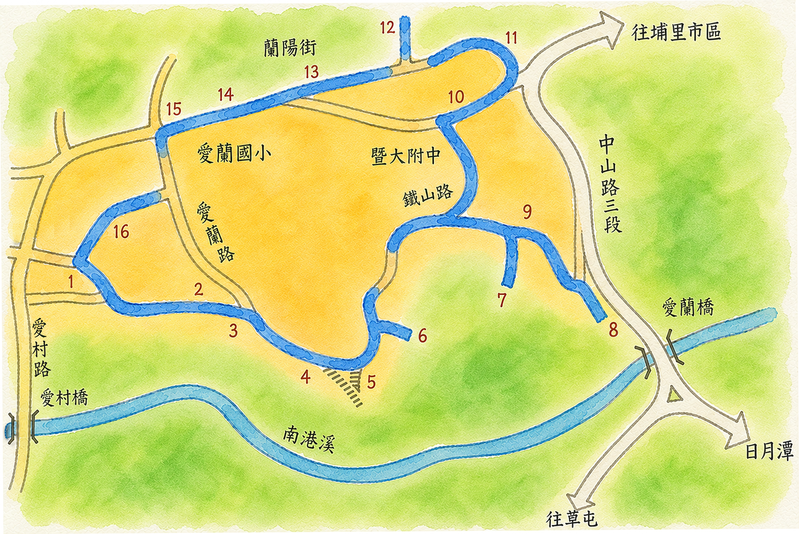
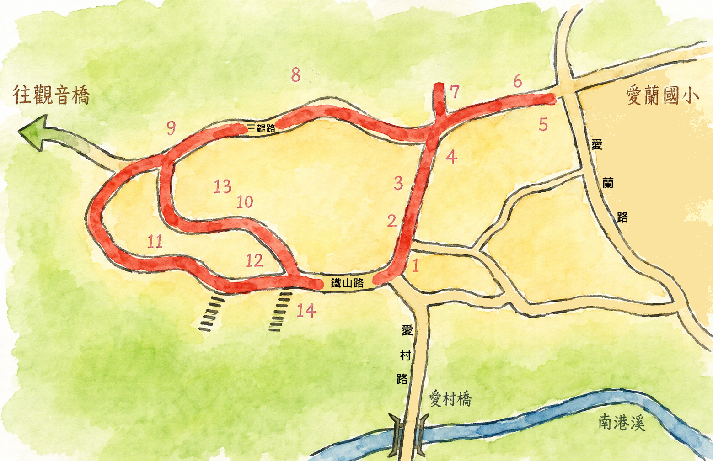
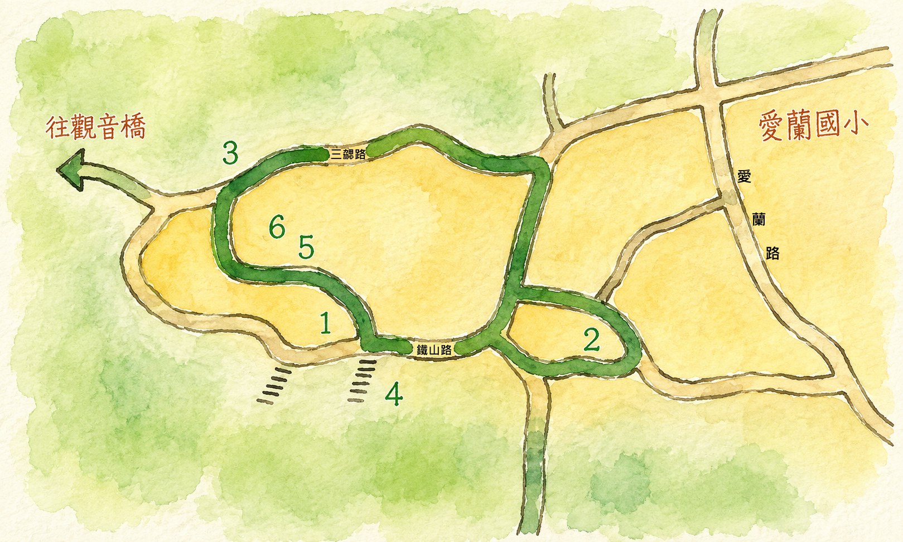

草屯沿中潭公路(台十四線)往埔里方向，穿過觀音一、二、三號隧道，眼前豁然開朗。觸目所及，均是埔里盆地。公路沿溪行，左側橫列著一長條平台高地，即是「烏牛欄台地」。自公路上遠觀，形似一艘待發的大船。因此，當地人也叫它「船山」。
自二千多年前的大瑪璘人，以迄一百七十多年前自台中縣遷移來的巴宰族人，豐富了這塊土地的內涵。特殊的地理位置和族群，使得這塊土地上保留了許多饒富趣味的先民智慧和足跡。讓我們一起來探索這艘大船的寶藏，出發囉！
共 6 節
共 6 節
共 4 節

1870年巴宰族潘開山·武干受福音感召，埔里第一間禮拜堂。
巴宰族耆老潘氏住宅，921震後重建。取名「水、米、田」寓意。
埔里最古老的土地公廟。
隸屬農會，民國83年以前成立。
早期台地居民挑水上下，青年鍛鍊體力之地。坡頂有糙葉樹。
夫妻樹(白雞油、楓香)及獨角仙棲息地，南眺牛相觸。
921地震後部隊撤離。
三級古蹟，供奉關聖帝君，見證烏牛欄之役，廟前有百年香楠。
1955年創立，由孫理蓮、謝緯醫師等宣教士開創山地醫療。
紀念德國宣教士貝德芬，創設山地伯特利聖經書院。
出入台地的孔道。
高牆隔開公墓區及住宅區。
早年稱「瑪莉亞產房」，提供山區產婦待產。
鐵山路98號，蔡先生傳統竹編技藝。
百年老樟樹、緬梔樹，派出所後方最大榕樹。
潘先生販售，播放「燒肉粽」懷舊老歌，近三十年。

